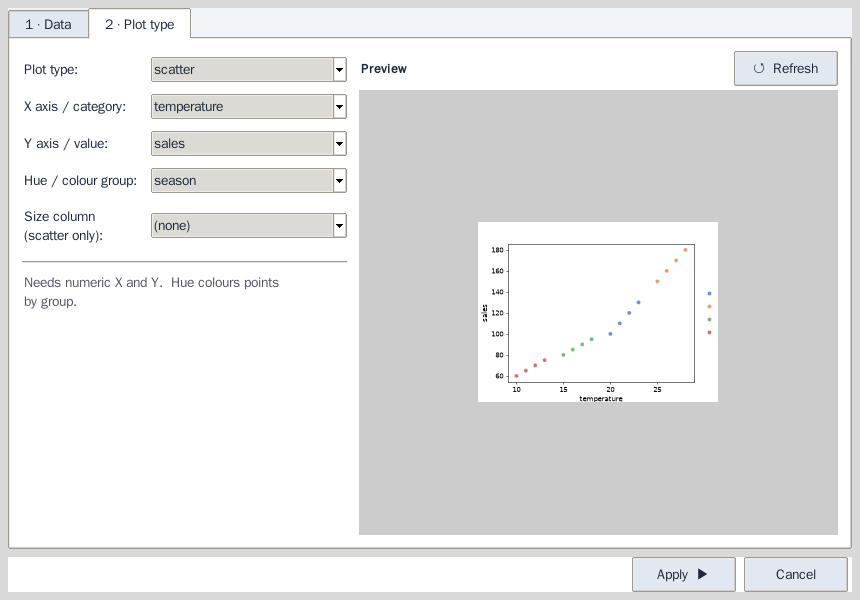
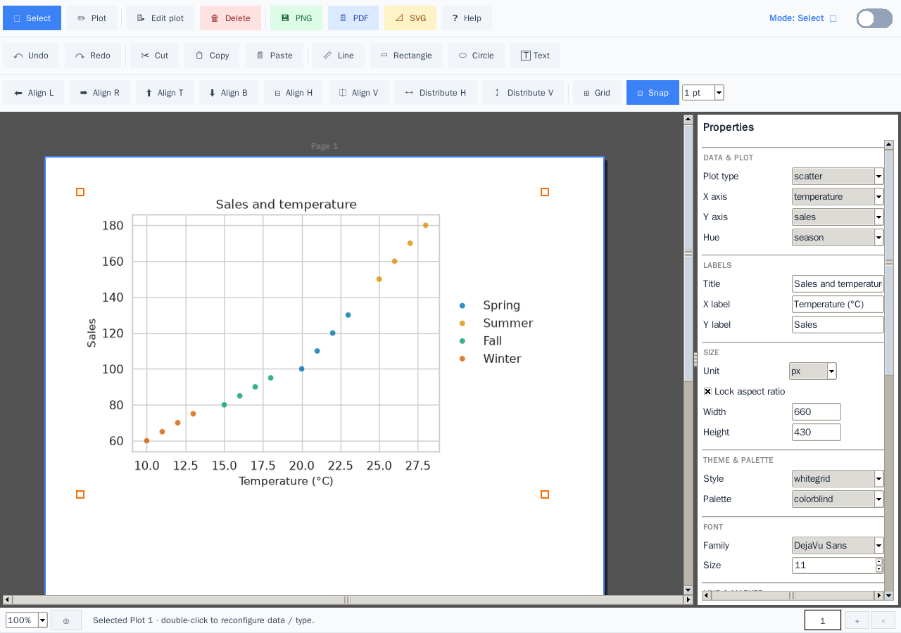
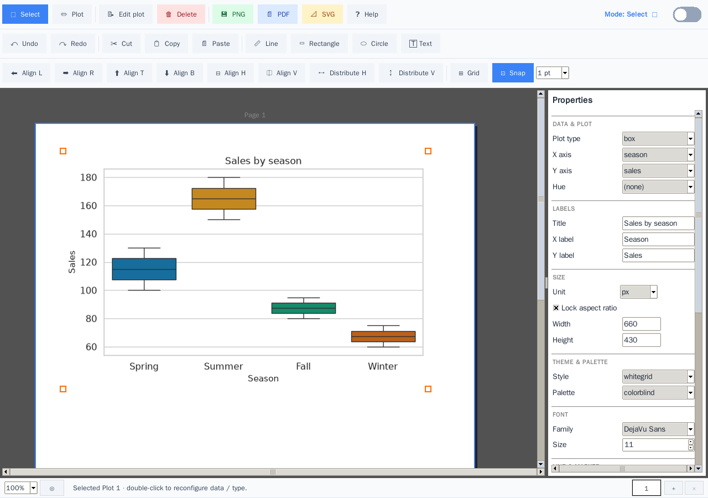

A practical guide to ktfigure
Thoughtful figures,
without writing code.
Turn a table into a clear, publication-ready figure. Follow along with real screenshots, then make the design your own.
01 / Get ready
Start with a tidy table.
Follow the installation instructions, then launch ktfigure from your terminal with ktfigure.
Download example_data.csv, or use the copy in the cloned repository. It has one observation per row and four columns: temperature, sales, season and region.
02 / First figure
Explore a relationship.
Make a scatter plot to see how sales vary with temperature, using colour to distinguish seasons.
The small step illustrations are schematics, not screenshots of the interface.
- Click Plot in the toolbar, then click and drag a large rectangle on the white artboard.
- In the Data tab, choose Browse CSV / TSV… and open
example_data.csv. The dialog moves to the plot configuration tab. - Choose scatter. Set X axis / category to
temperature, Y axis / value tosales, and Hue / colour group toseason. Leave Size as (none). - Check the preview, then click Apply. If you want to change the data mapping later, select the plot and click Edit plot or double-click it.

03 / Aesthetics
Give the data room to speak.
In Select mode, click the plot to open its Properties panel. Changes are applied as you edit. The panel scrolls to reveal more controls.

Label for the reader
Under Labels, try the title Sales and temperature, X label Temperature (°C), and Y label Sales. Use meaningful units where available.
Choose a restrained palette
Under Theme & Palette, try whitegrid and colorblind. Colour should identify groups, not compete with the data; check the result in grayscale too.
Keep text legible
Use a consistent font family and size across panels. Resize the plot with its handles or the Size fields, and check labels at the final intended output size.
Reduce clutter
Scroll to Grid & Legend to turn the grid or legend on and off, change legend placement, or remove its frame. Use a legend when colour communicates a group.
For a single-colour figure, use Colour Override. For grouped data, the Hue Colours controls let you set individual group colours. Reuse the same colours for the same groups across panels.
04 / Another view
Compare distributions.
Try a box plot to compare sales across seasons. It summarizes the median, spread and potential outliers rather than showing the relationship between two numeric variables.
- Draw another plot region and load the same CSV, or select the scatter plot and click Edit plot to replace it.
- Choose box, set X to
season, Y tosales, and Hue to (none). Click Apply. - In Properties, set the title to Sales by season, the X label to Season, and the Y label to Sales. Try the same colorblind palette and font as the scatter plot.

Other starting points: choose strip with the same X and Y to show individual observations, or histogram with X set to sales to see its overall distribution. Choose a plot that matches the question and sample size.
05 / Finish
Arrange, inspect, export.
For a multi-panel figure, draw separate plots on the artboard. In Select mode, Shift-click objects to select several, then use the Align and Distribute toolbar buttons. Leave space around labels and legends, and use the same font and visual hierarchy across panels.
Add annotations using the Text, Line, Rectangle or Circle tools. Select an object to edit its properties. Undo is available if you need to revise the layout.
Click PDF or SVG in the toolbar for vector output, or PNG for a raster image. These export the current artboard, including its white space. Inspect the exported file at its intended size before submitting it.
Ready for a complete figure?